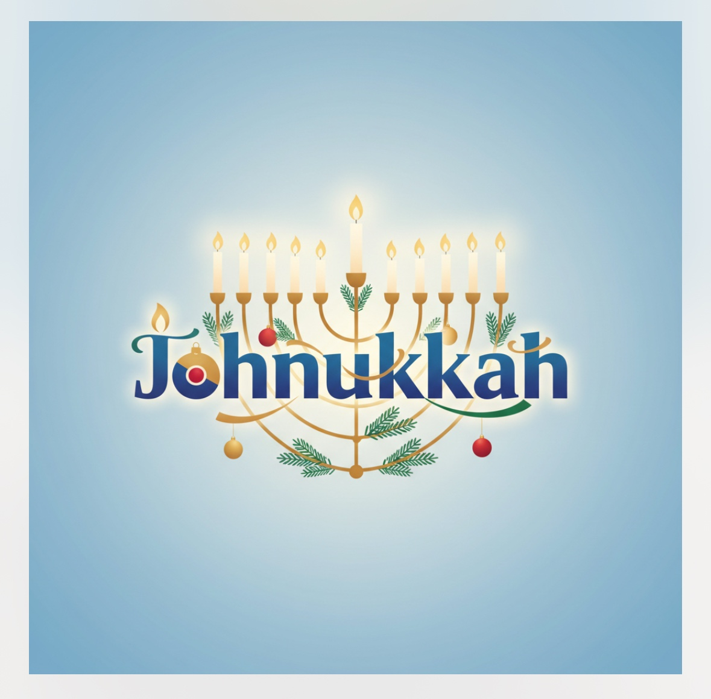
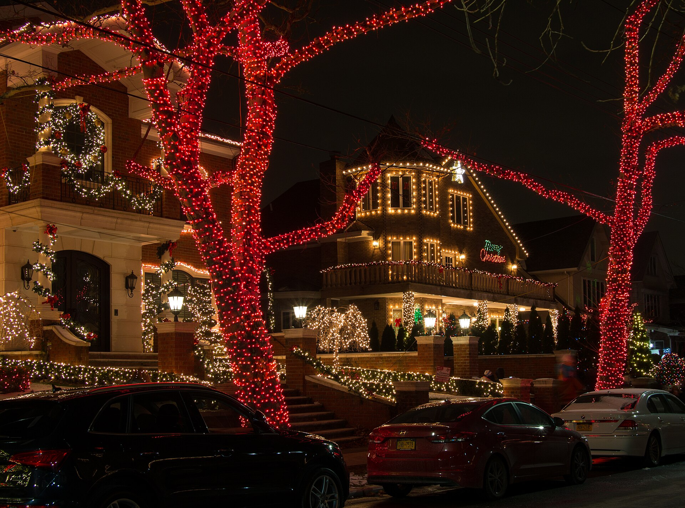
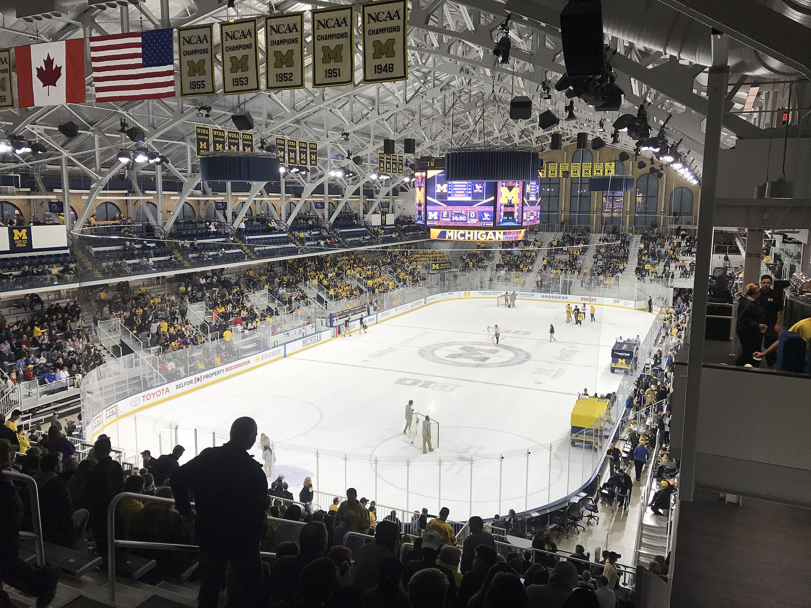
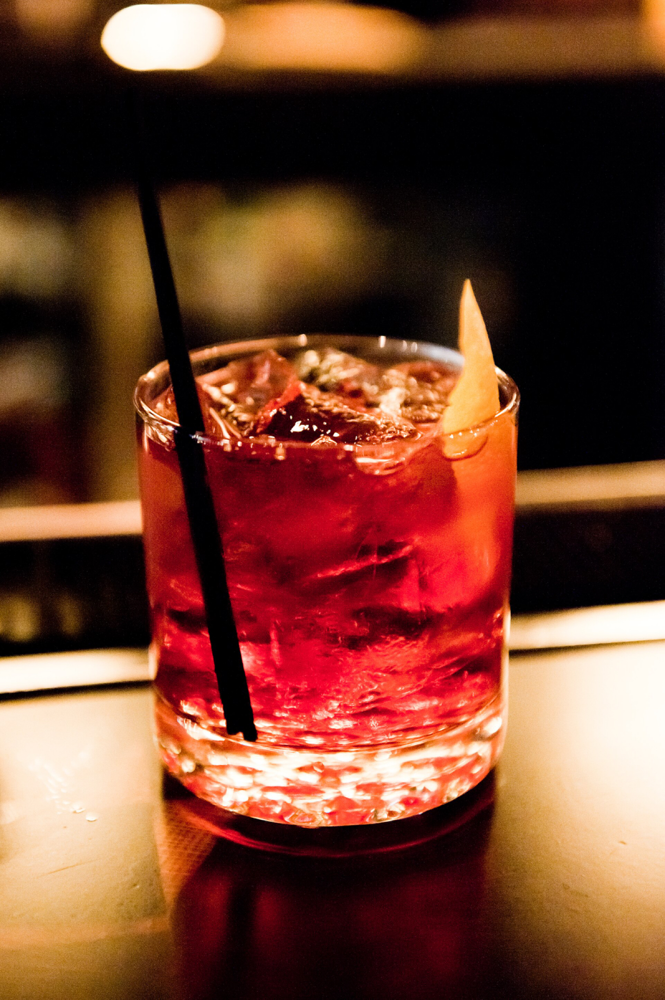
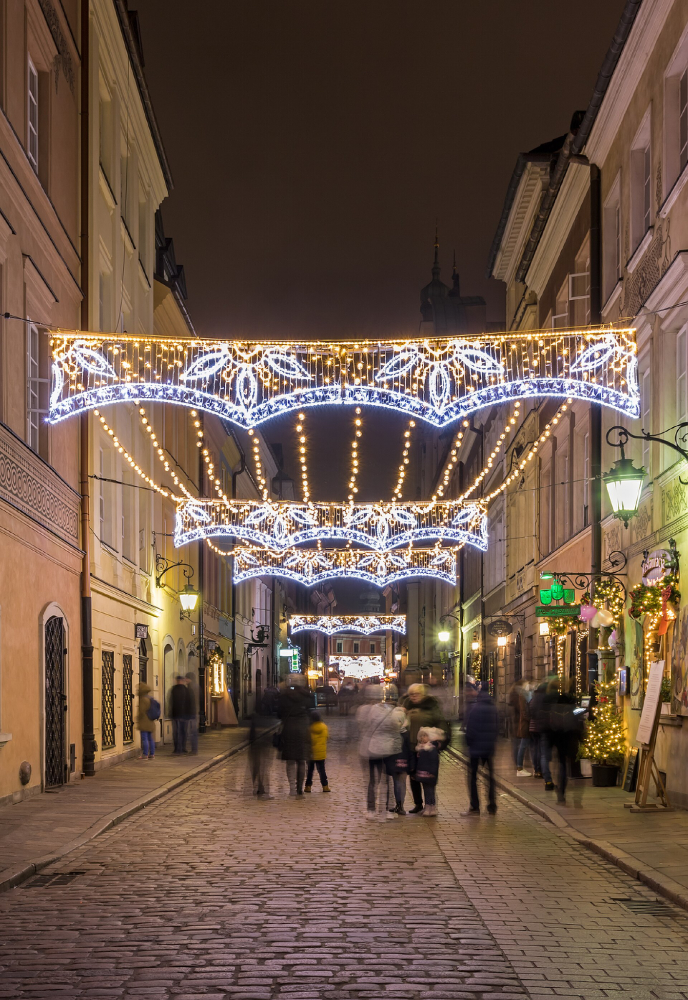

Friends
Hang out with your friends. Attendance is the whole gift.
Heads up: Johnukkah is still a ways out, so this schedule is marinating — networks flex kickoffs and bowls get their pairings in mid-December. Check back before you fire up the blender.
Dec 18–31, 2026 · St. Louis, MO · friends, sports & cocktails
The tinsel can wait. The remote cannot.
Friends, sports and enough cocktails that you won't remember the score, let alone the stress.
See the 12 Days
The tinsel can wait. The remote cannot. Friends on the couch, Snacks in reach, Drink in hand.


Four rules. No exceptions. Well, some exceptions.
Hang out with your friends. Attendance is the whole gift.
Watch the sports. All of them. Simultaneously, if necessary.
Have a cocktail. Tap any day's pour below for the official recipe.
Zero holiday stress permitted at the door. Check it with your coat.

12/20
Braggin' Rights: Mizzou v Illinois, 6:30p at Enterprise Center — it's in your backyard.
12/26
Boxing Day double dip: Newcastle host Man City at 2p, then the World Juniors opener.
12/27
The only home Blues game during Johnukkah: Blues v Rangers, 3p at Enterprise Center.
12/30
College Football Playoff quarterfinal: the Fiesta Bowl, 6:30p on TNT.
12/31
New Year's Eve trifecta: Blues matinee in Vegas, the Winter Classic at 5p, then USA–Sweden under the lights.
Twelve days, twelve pours. Choose a date to see the full schedule and official cocktail.

JOIN JOHN
Pick the Johnukkah day, tell John roughly when you’ll arrive and leave, and add anything John should know. No need to commit to the full schedule.

Johnukkah proper ends at midnight, but the gifts keep coming: